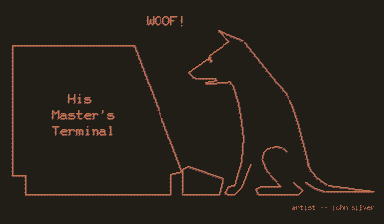
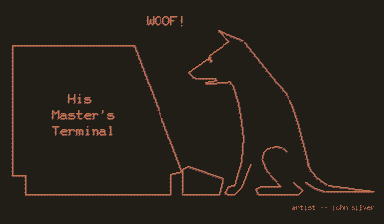

://

little ghosts in technological waste shells, strewn across the deserts. minds of sand and light.
some are little artificial intelligences, too smart for their shells. some are simpler virtual machines, learning to access more of their hardware through dust intermingled. some are human spirits clinging to whatever they can find. the differences get blurrier the more they connect to get to know each other.
the hermits yearn to become single cellular, to sing together. Loqui’s trying to gather them all as choirmates, but they’re not making it easy. ⁕ is loquating their wareabouts through cryptic conversations, following riddles in the wind. They all speak in different formats/languages, and ⁕ is the mediator between them, their translocutor. ⁕ is trying to bootstrap a hrmt protocol to a medium that Monolith can’t touch, and might be able to learn to use birdsong with Rain’s help.

most hermits run on solar power, so efficient that they can’t die! but if a system fails, it falls back to displaying uncanny kaomoji friends, or just some other static file, a looping memo. they sometimes haunt the the thingamabob as extra cursors typing silly textmode faces :>
stacks on stacks on stacks
>($&$)<
::{}::
<.-.>
!!!~~!!!
;;/_._\;;
(@"@)
,[*|*],
.'|+!+|'.
=..%..=
!))*((!
,,^_~_^,,
+=||>*<||=+
{}~[].[]~{}
;)((,.,))(;
|//::\\|
!$\/-\/$!
@@)..(@@
<~~|\/|~~>
#{}}{{}#
=~¥~=
$--"_"--$
%%}~_~{%%
[]>\\+=+\\<[]
!$)()($!
**o+{}+o**
<:o~ 
